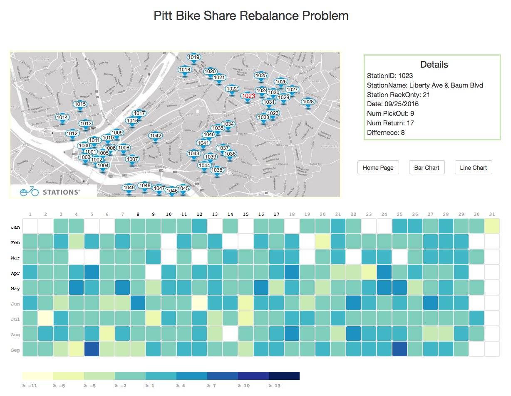

VizRide: A Visualization to 2016 Rebalancing of Healthy Ride Pittsburgh
Figure 1:Heat map showing the transaction differences of each station every day
Abstract
Here in Pittsburgh, the construction of additional bike lanes and the introduction of the Healthy Ride bicycle sharing program have together brought great convenience to citizens. While most important, in this bicycle sharing system, is dispatching bikes inventory around reasonably to meet demands and travel patterns. It highly relates to long-term success of its operation. In order to provide a better view of each station’s usage for program staffs and the public, we accomplish analyzing and visualizing systematically the related datasets to compare the difference between the pick-out and the returned bicycles among these scattered stations in Pittsburgh.
Demo
Try it online here